Why this project
Access control is easy to describe on paper and easy to misconfigure in practice. This project builds a dedicated IAM identity with group-based AWS managed policies, then tests the resulting permissions as that user by performing actions that should succeed and actions that should be denied.
Scope note: this lab intentionally uses AmazonS3FullAccess to contrast full S3 access with AmazonEC2ReadOnlyAccess. Because AmazonS3FullAccess is broader than a task-specific policy, this project demonstrates permission scoping and validation rather than a strict least-privilege implementation. A production least-privilege design would use a customer-managed policy limited to the exact S3 actions and resources required.
Provisioning the user and group
Navigate to IAM
Opened the IAM console to begin provisioning a scoped-down identity rather than reusing root or an over-permissioned existing user.
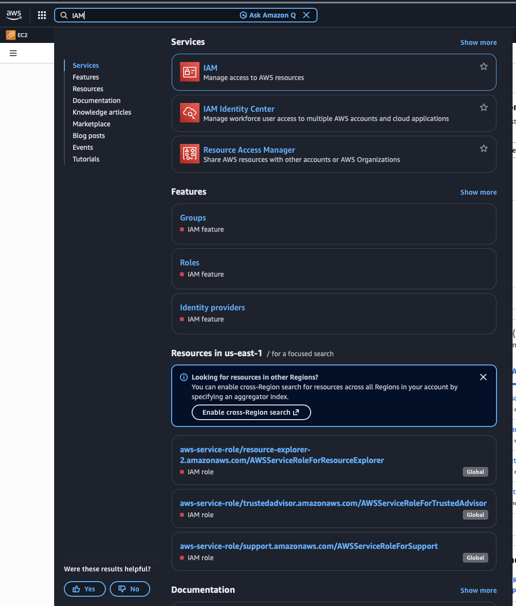
Create the user
Under Users, selected Create user and named the identity Alexa — a dedicated test identity rather than reusing an admin account.
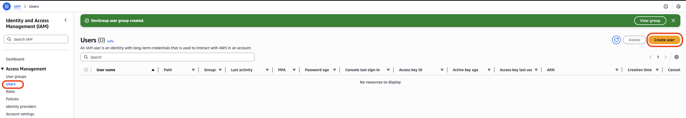
Set user details
Enabled console access with an autogenerated password and required a password reset on first sign-in — no shared or reused credentials.
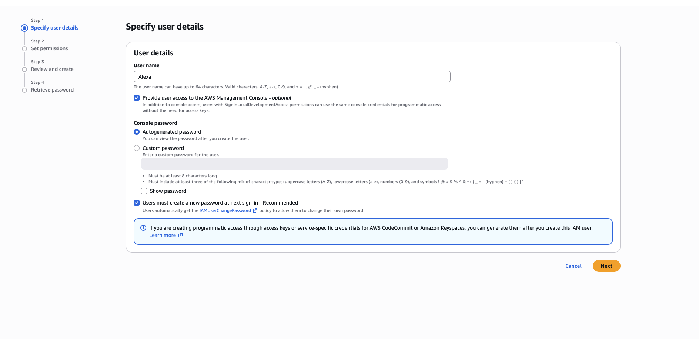
Create the permissions group
Rather than attaching service permissions directly to the user, created DevGroup and selected two AWS managed policies: AmazonS3FullAccess and AmazonEC2ReadOnlyAccess. The screenshot is filtered to S3, so it visibly shows the S3 policy while the console indicates that two policies are selected; the later permissions screen confirms both are attached to the group.
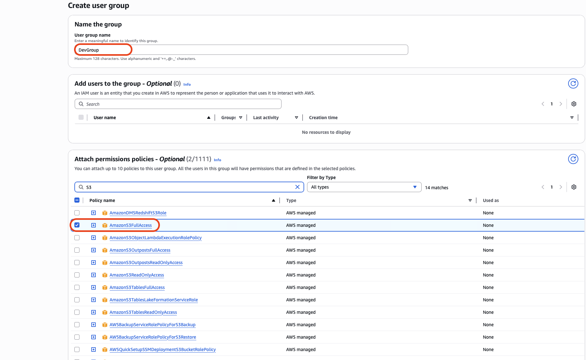
Group created
Confirmed that DevGroup was created successfully before assigning Alexa. The group row shows that permissions are defined; the individual policy names are confirmed on the permissions screen in the next step.
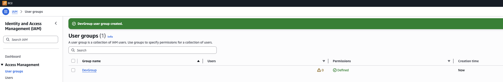
Attach user to group
Selected DevGroup for Alexa during user creation. The attached-policies column shows the S3 full-access and EC2 read-only policies, so Alexa receives those identity-based permissions through group membership rather than direct service-policy attachments.
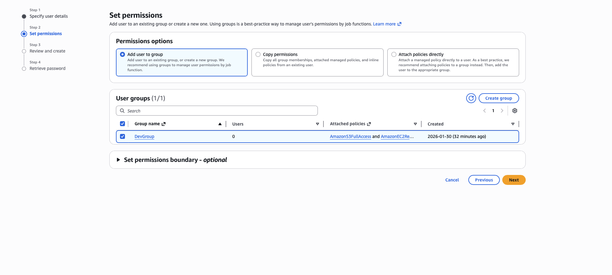
Review before create
The review screen showed DevGroup plus the IAMUserChangePassword policy associated with this user-creation workflow. These are the identity-based permissions shown at creation time; AWS can also evaluate other applicable policy types when determining effective access, which is why the lab validates behavior directly later.
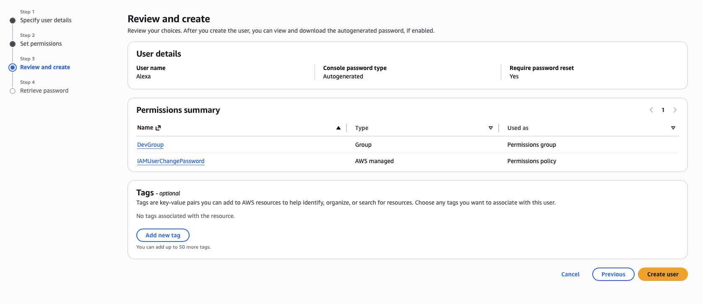
Retrieve credentials
Retrieved the autogenerated console password and sign-in details. AWS marks this as the only time the generated password can be viewed or downloaded, so it must be captured securely at this stage.
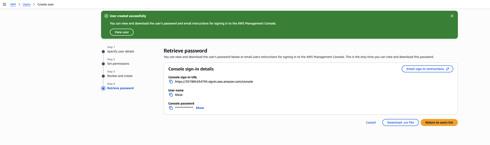
User confirmed
Alexa now appears in the Users list with one group membership and no MFA device configured yet — the next security control to add.
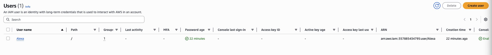
Configuring MFA for console sign-in
Flag console access without MFA
The user's security credentials page showed console access as enabled without MFA and no MFA device assigned, identifying a clear authentication gap to address.
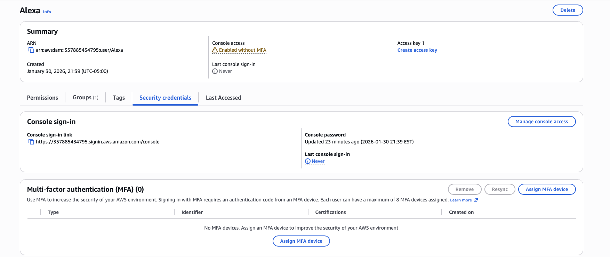
Choose device type
Named the device and selected Authenticator app as the MFA device type for this test identity.
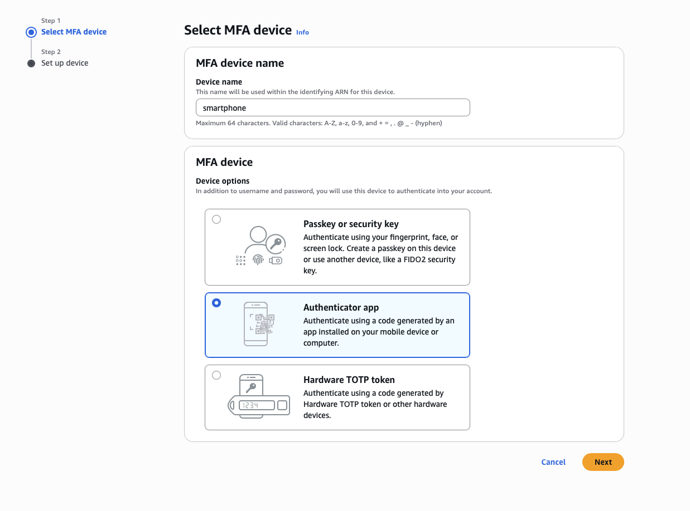
Bind the device
The virtual MFA setup screen prompted for a QR-code scan and two consecutive TOTP codes. I completed those prompts to associate and synchronize the authenticator app with the IAM user; the next screenshot confirms the device was successfully assigned.
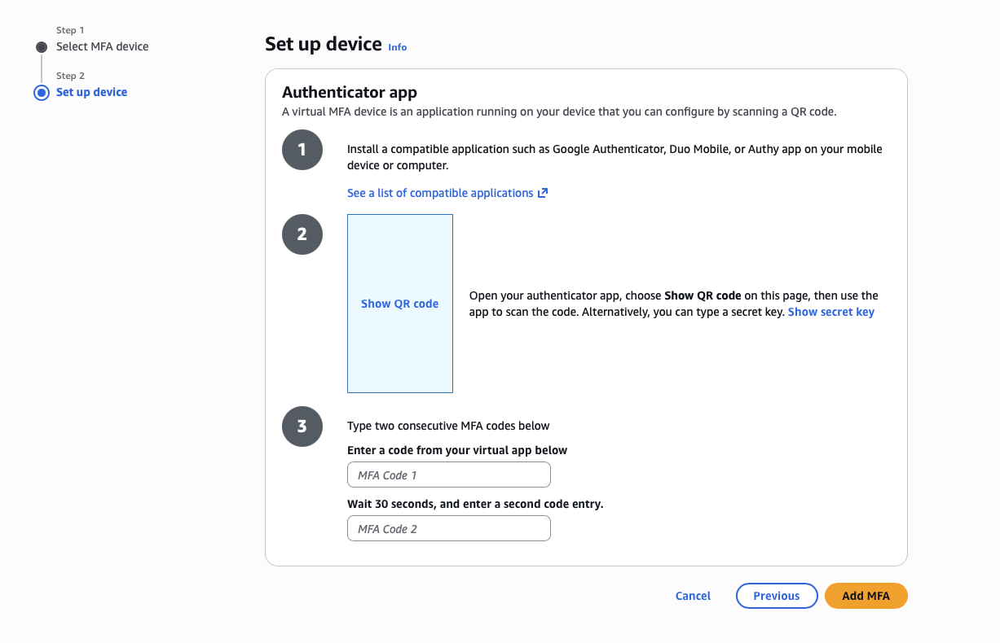
MFA active
The user summary now shows console access as enabled with MFA, and the virtual MFA device appears under the user's security credentials — confirming the device was successfully assigned.
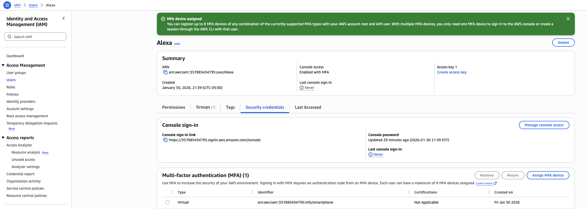
Validating effective permissions as the test user
After building the identity, signed out of the administrative session and signed back in as Alexa, then deliberately tested both permitted and non-permitted actions. These tests validate the behavior observed in this lab session; AWS evaluates all policies that apply to a request, not only group policies.
Signed in as Alexa
The account menu identifies the active principal as IAM user Alexa, establishing that the following permission tests are being performed from the test-user session rather than the administrative identity. The separate Account color — Access denied message shown in this crop is an account-menu permission message, not a failed sign-in.
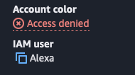
Created an S3 bucket
Bucket creation succeeded while signed in as Alexa, demonstrating that the user had an effective allow for the required S3 bucket-creation action in this lab context.
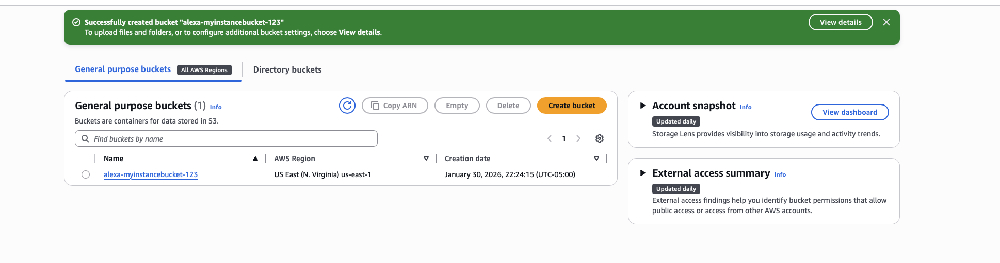
Begin the EC2 launch workflow
Navigated to the EC2 Instances page and started the Launch instance workflow. This screenshot shows the start of the test; the authorization failure is captured in the following steps.
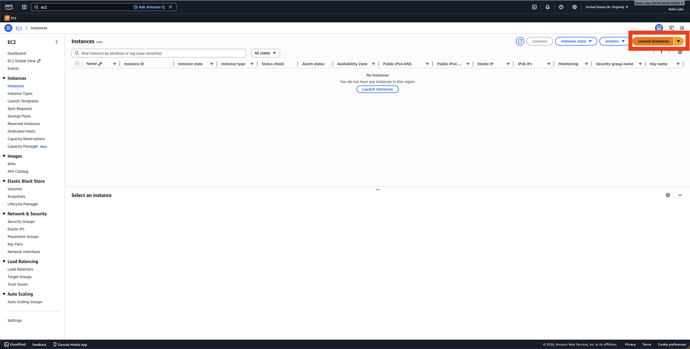
Key pair creation blocked
An attempt to create a new key pair was denied on ec2:CreateKeyPair because no identity-based policy allowed that action for Alexa.
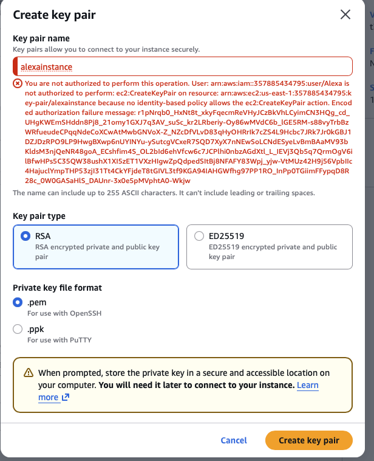
Launch workflow blocked at security-group creation
The launch workflow failed when AWS attempted ec2:CreateSecurityGroup. The page shows the initialization step succeeded but security-group creation failed, preventing the workflow from completing. This confirms denial of ec2:CreateSecurityGroup; it does not by itself show a separate authorization decision for ec2:RunInstances.
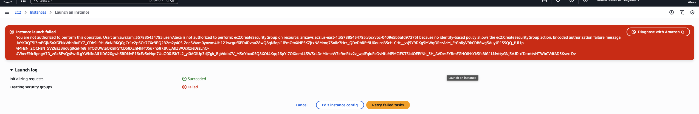
Uploaded an object to the bucket
Uploaded a PDF object to the test bucket successfully, demonstrating effective S3 object-write access in addition to bucket creation.
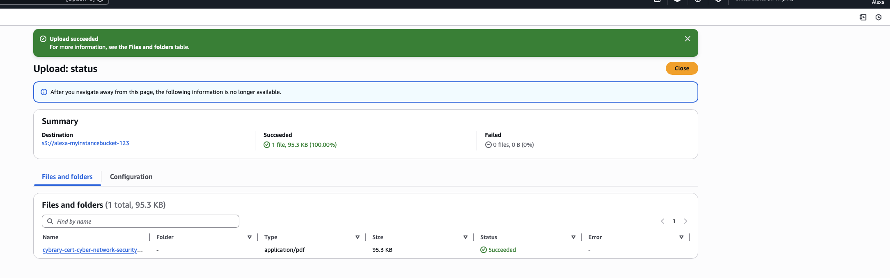
Object confirmed in bucket
The uploaded PDF appears in the bucket's object list, independently confirming that the object was stored successfully.
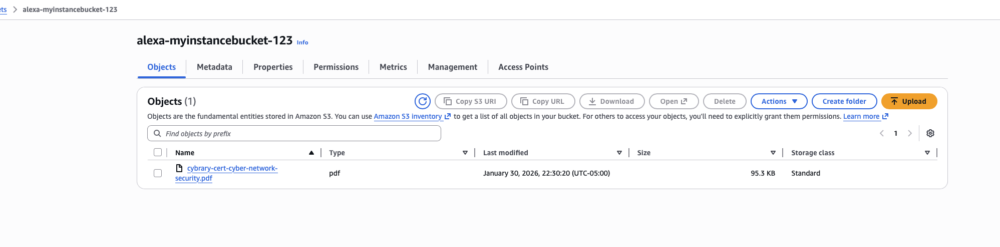
VPC creation blocked
Attempted a separate EC2/VPC modification by creating a VPC. AWS denied ec2:CreateVpc because no identity-based policy allowed that action, providing another write test outside the instance-launch workflow.
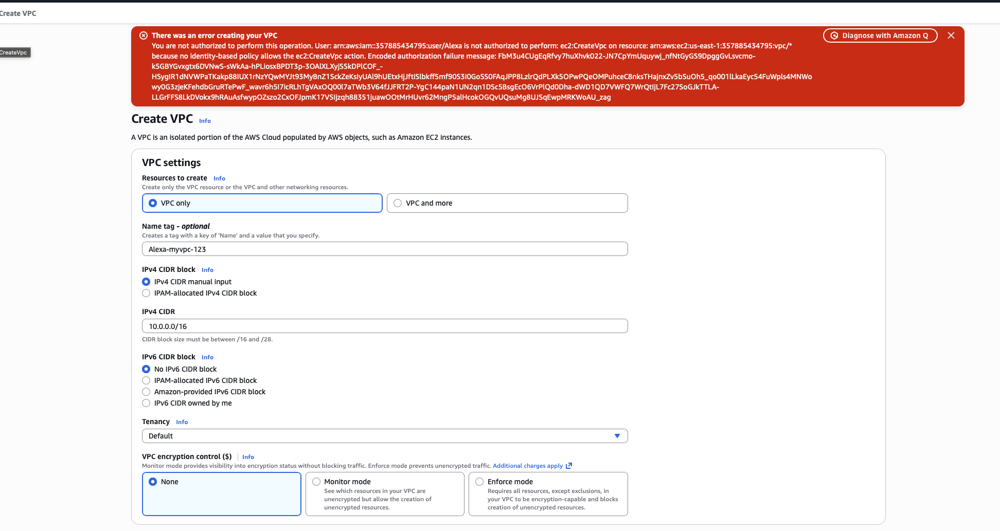
Stopping running instances blocked
Alexa could view the running instances through the read-only permissions, but attempting ec2:StopInstances was denied because no identity-based policy allowed that modification action.
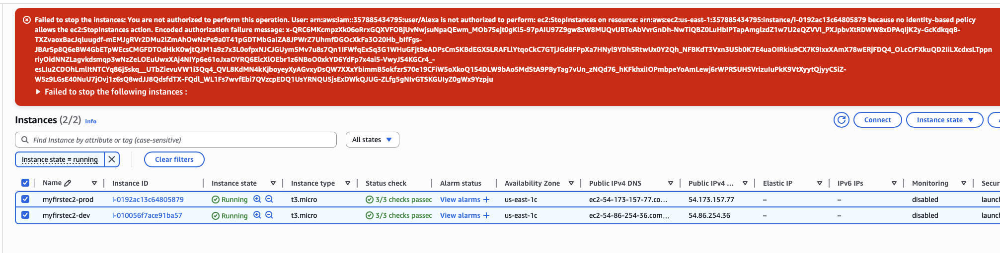
Result: the S3 operations tested succeeded, while the EC2 modification attempts shown in this lab were denied. Key-pair creation, security-group creation during the launch workflow, VPC creation, and stopping existing instances were all blocked. The instance-launch workflow could not complete because ec2:CreateSecurityGroup was denied; the screenshot does not independently prove that ec2:RunInstances itself was evaluated.
Provisioning a second user via CLI (CloudShell)
To demonstrate IAM resource creation from the command line, used AWS CloudShell to create a second IAM user resource. This is intentionally narrower than the earlier console workflow: create-user creates the IAM user object only; console credentials, group membership, permissions, and MFA require separate configuration.
Locate CloudShell
Searched for AWS CloudShell from the console. CloudShell is a browser-based shell with AWS CLI installed, and it makes the credentials from the active console session available automatically so separate CLI credential configuration is not required.
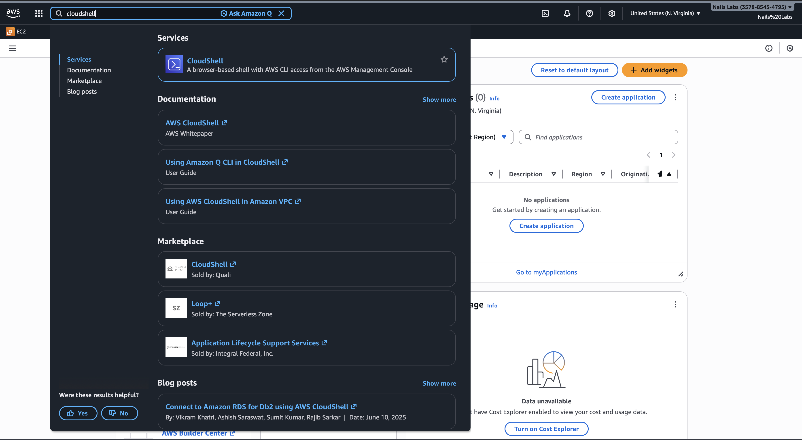
Create the IAM user resource with one command
Ran aws iam create-user --user-name Siri. The command created the IAM user resource and returned its user name, user ID, ARN, and creation timestamp. It did not create a console password, add Siri to DevGroup, attach permissions, or configure MFA; those are separate IAM operations.
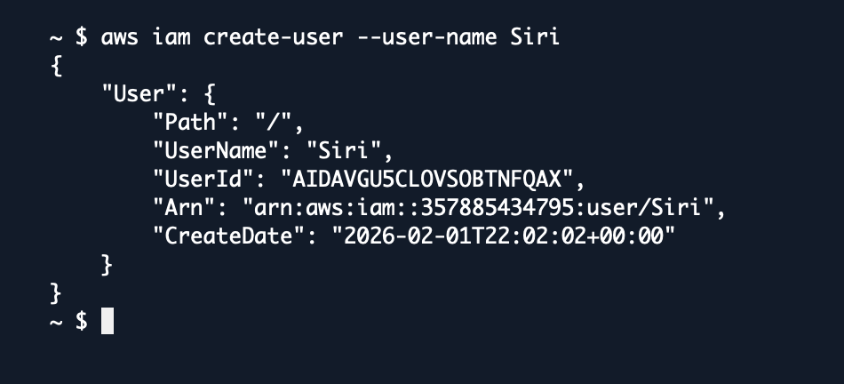
What this demonstrates
- Group-based policy assignment centralizes shared identity-based permissions and makes them easier to manage consistently across users. Effective access can still be influenced by other applicable policy types, such as resource-based policies, permissions boundaries, session policies, and AWS Organizations policies.
- Virtual MFA adds a second factor to the IAM user's console sign-in. Requiring MFA for specific API or CLI actions is a separate authorization design that can be implemented with MFA-aware policy conditions and temporary credentials.
- Policy intent should be validated with real authorization tests. In this lab, successful S3 actions and denied EC2 modification attempts demonstrated the effective behavior of the test identity rather than relying only on policy names.
- The lab intentionally uses asymmetric access — broad S3 access and read-only EC2 access — to make permission differences easy to observe. For a production least-privilege design, the S3 side should be narrowed to only the required actions and bucket/object ARNs.
- The console and CLI both interact with IAM, but each CLI command performs a specific operation.
aws iam create-usercreates the user resource only; additional commands or infrastructure-as-code are needed to configure credentials, group membership, permissions, and MFA.